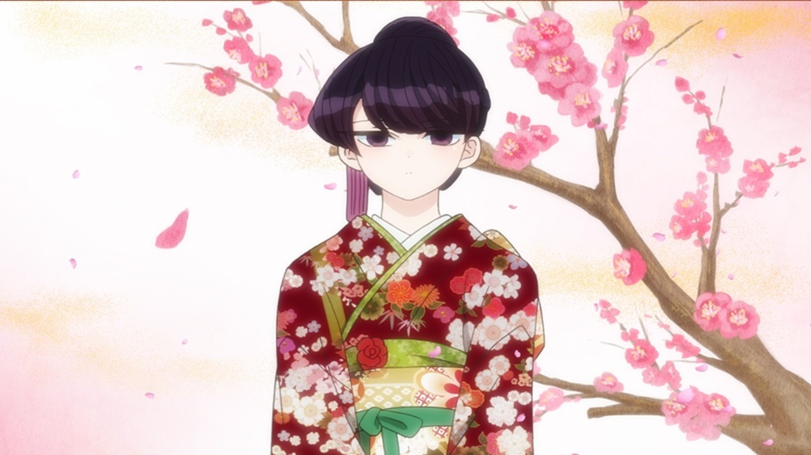

Reseña | Komi-san Can’t Communicate 2 - Capítulo 5

Komi-san Can’t Communicate 2 - Capítulo 5: Muñeco de nieve / Pelea de bolas de nieve / Fin de año / Año Nuevo Komi es visitada por Najimi y Tadano temprano en la mañana debido a que la nieve se acumuló, por lo que piensan jugar. Es luego de ver un pequeño muñeco de nieve hecho por Tadano que deciden hacer uno mucho más grande. Cooperando los tres para lograrlo. Después de hacerlo, mientras Tadano y Najimi van por sopa caliente preparada por Shuuko, Komi hace otro muñeco de nieve pequeño para acompañar al de Tadano.
Najimi llama a la acción para hacer una pelea de bolas de nieve, juntándose diez personas en total. Najimi, Tadano, Yamai, Agari y Makeru en un equipo, contra los cuatro niños de primaria Ooki Itsuya, Saiko Chii, Michisato Laura y Shiota Shouta en el equipo de Komi. Aunque los niños de primaria son derrotados a cambio de dejar fuera a Agari y Tadano, Komi logra ganar la pelea al recibir la ayuda de Yamai que traicionó a Najimi y Makeru.
Para finalizar el año, Komi junto con su familia van a visitar una vez más a la abuela. Es ahí que, con su prima Akira a la que se ha hecho más cercana, comienza a jugar, aceptando jugar Hanafuda aunque no sabe las reglas. Sin embargo, la abuela Yuiko reta directamente a Akira, apostando el dinero de año nuevo que le dará dependiendo de quién gane y con cuánta diferencia. Akira termina perdiendo, por lo que luego de plegarias, Komi acepta vengarla. Aún sin saber bien las reglas, logra derrotar a la abuela.
Akira y Komi se preparan para ir a hacer la primera visita al templo junto con la abuela. Aprovechando lo conveniente que es tener a Komi vestida de kimono, abriendo la multitud, logran hacer rápidamente su visita. Pero, como ayuda y experiencia, Komi termina aceptando cumplir con un trabajo de Miko. Encontrándose con Inaka como su compañera. Quien, al verla en problemas, la ayuda aunque quede a descubierto que es del campo.
Nuevos amigos de Komi-san Viniendo de un episodio anterior en el que no hubo un nuevo miembro en la lista de amigos de Komi, en Komi-san Can’t Communicate 2 – Capítulo 5 se agregaron bastantes. Empezando con los niños de primaria de la pelea de bolas de nieve. Si bien desde el principio me hubiera gustado que tuvieran una mayor presentación, sin embargo, me agradó que lo hicieran mostrando las relaciones entre ellos.
Sobre el cómo terminaron haciéndose amigos de Komi no tengo mucho que decir. Fue bastante natural. No solo gracias a la personalidad de cada uno de los niños, sino que, a diferencia de los personajes mostrados hasta el momento, ellos no veían la divinidad de Komi al inicio. Por lo que no hubo presión o nerviosismo en ese aspecto. Aunque, por supuesto, luego de verla en acción, eso cambió. Esta vez, con un poco de “ayuda” de Yamai.
Ahora bien, sobre Inaka. A la lista de amigos de Komi-san le faltaban 87 al inicio, contando a la gata Chocola faltarían 86. Después de eso no recuerdo la adición de otro nombre a la lista, por lo que Inaka debería de pertenecer ahora a la lista con solo 81 nombres faltantes. Es por esto que me hubiera gustado ver a Komi entregándole la lista a Inaka para que se apuntara en ella, en especial porque esta vez no tenía a Tadano junto a ella como soporte. Incluso si esto no estaba en la fuente original, el manga.
Pero, al igual que con los niños, la amistad entre Inaka y Komi me pareció bastante natural de cierta manera. Siendo la misma Inaka la que se acercara a Komi para ayudarla cuando lo necesitaba. Dejando de lado su propia angustia de ser reconocida como alguien del campo y percatándose que algunas facetas de Komi no son lo que parecen. Por lo menos reconociendo que Komi estaba alterada, siendo que muchos otros personajes, hubieran creído otra cosa. Con el poco tiempo que pasó Inaka junto a Komi, creo que le ganaría un duelo sobre “¿Qué está pensando Komi-san?” a Nakanaka y Yamai.

Por cierto, en lo personal me gustó mucho más cómo se veía Komi vestida de miko que con el kimono. Ambas eran bastante buenas opciones.
Adentrándose en el ambiete Algo que aprecio de Komi-san Can’t Communicate 2 – Capítulo 5 es que tuviera más de un momento en el que, para mí, lograron crearon un ambiente en el que podía sentir más “vivo”. Específicamente hubo dos momentos así: el mini-arco del muñeco de nieve y la guerra de bolas de nieve cuando dejan fuera de juego a Michi.
La primera me gustó por el que hayan mantenido un momento casi sin participaciones vocales de los personajes, dejando la banda sonora y los efectos de sonido para seguir los acontecimientos. Esto es algo que no tiene mucho que descubrí me gustaba, luego de ver algunas escenas de “Karakai Jouzu no Takagi-san” y el propio “Joshikausei“. Además, este estilo le queda a la perfección al anime junto a Komi, claro que en contadas ocasiones. Por ejemplo, este mini-arco me parece completamente entendible incluso aunque las pocas palabras en pantalla no fueran subtituladas. Las reacciones y el lenguaje corporal de los personajes fueron más que suficientes.
En cuanto a la segunda, me pareció curioso y divertido que le dieran un toque tan dramático al momento de la eliminación de Michi. Ciertamente la banda sonora acentúa este hecho, no obstante, me pareció que estuvo bien logrado el ambiente a su manera. Lo sentí con mayor énfasis en el drama, sin perder ese toque de que están en un anime de comedia.

Me gusta la manera en la que han ido progresando en Komi-san Can’t Communicate 2 en aspectos técnicos, ya sea animación o musicalización. Por supuesto, espero que sigan con la misma calidad o que incluso la “mejoren”. Además, estoy un poco ansioso por el próximo capítulo, ya que, si no se lo saltan, debería de venir por lo menos un buen mini-arco.